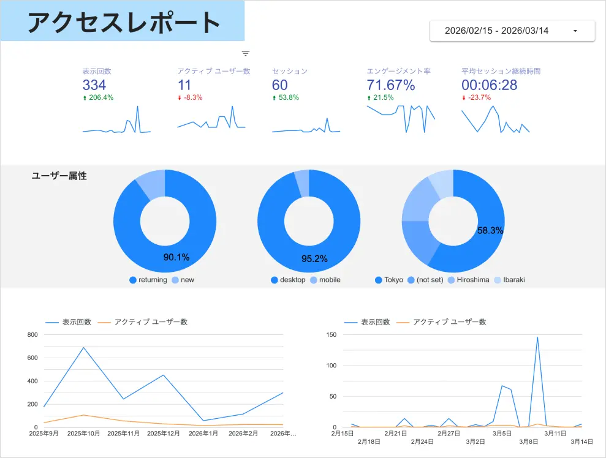
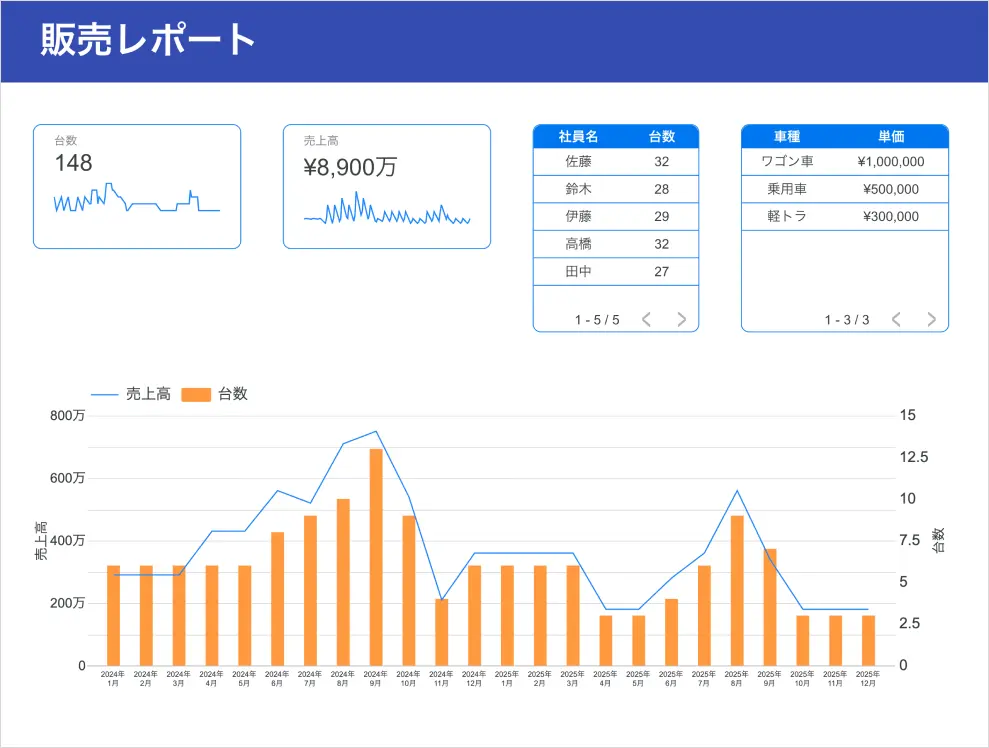
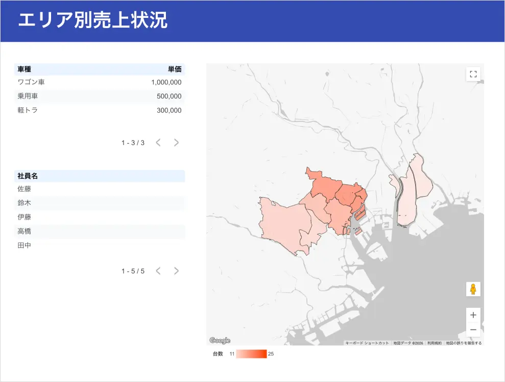

Looker Studio
Looker Studioでは、Googleスプレッドシートなどのデータソースを接続し、データの可視化ダッシュボードを構築します。
計算フィールドやフィルタコントロール、期間比較などを活用し、リアルタイムに状況を把握できる業務レポートを作成します。
また、複数のグラフや指標を組み合わせることで、KPI管理や業務状況のモニタリングにも対応します。
さらに、AppSheetと連携することで、業務アプリに入力されたデータをリアルタイムで可視化し、最新の業務状況をタイムリーに把握できるダッシュボードとして、経営判断にも活用できます。
活用イメージ：GA4（Google Analytics）
GA4（Google Analytics）とLooker Studioを連携し、Webサイトのアクセス状況を可視化するダッシュボードを作成。ユーザー数、流入チャネル、ページ閲覧数などの指標をリアルタイムで確認できるレポートとしてまとめています。

活用イメージ：販売レポート
販売データをもとに、台数・売上高・社員別実績などを可視化したダッシュボードを作成。 売上推移や販売台数を時系列グラフで確認できるほか、エリア別の販売状況を地図上で表示し、地域ごとの販売傾向を把握できるレポートとしてまとめています。

